| 日付 | 2018年2月4日（日） |
|---|---|
| 山域 | 房総 |
| メンバー | 家族（妻、長女・6歳、長男・4歳） |
| 山行形態 | 子連れ日帰り |
| アクセス | 車 |
| ルート (Map) | 市営無料駐車場 (8:03) - (8:19) 福満寺 - (9:31) 富山南峰 - (9:49) 富山北峰 (11:23) - (12:23) 伏姫籠窟 (12:49) - (13:17) 市営無料駐車場 |
関東でも2回雪が降り、周りの山々はほとんど雪に覆われてしまった。
今回は雪山を避け温暖な千葉の山に行くことにする。
選んだ山は富山。11年前に1度登った山で久々の再訪だ。
市営無料駐車場に車を停める。標高20m。
便利な場所にこのような駐車場があるのはありがたいことだ。
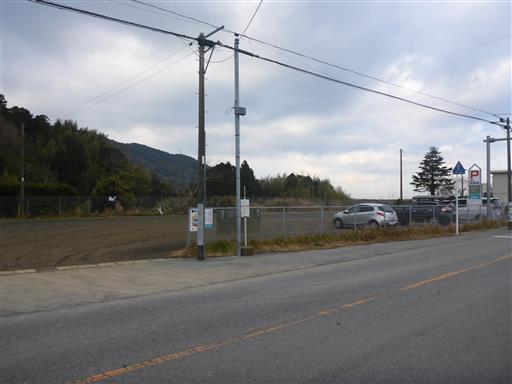
目指す富山が見えている。天気予報に反して空はどんよりとしている。
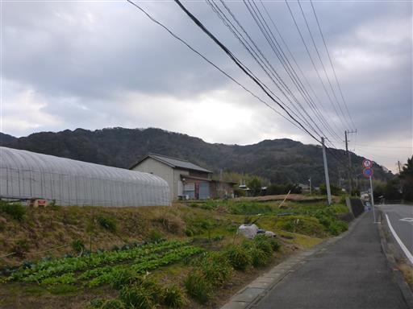
水仙の花が咲いている。千葉は水仙の栽培が盛んだ。
息子が地面に落ちている（水仙の？）球根を見つけてご満悦だ。
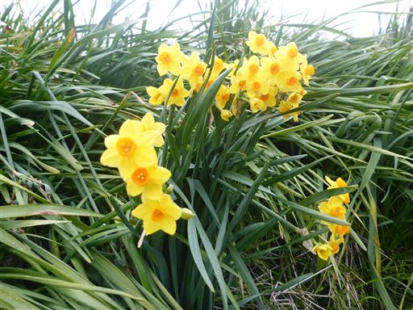
菜の花。
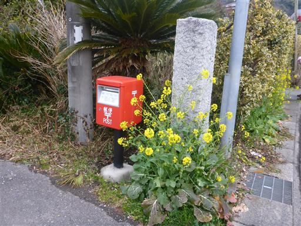
ホトケノザ。房総はもう春の気配が感じられる。
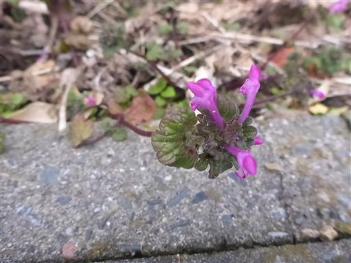
富山の麓にある福満寺に立ち寄る。
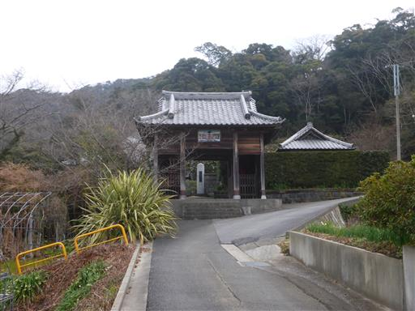
この大きな植物は一体何だろう？
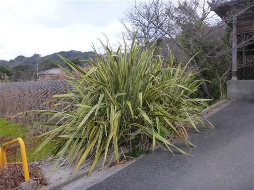
比較的小さな寺で銅鑼や賽銭箱は見当たらない。
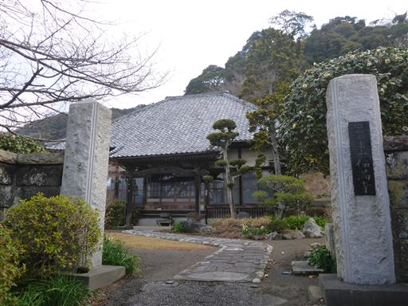
寺の側にトイレがあるため立ち寄る。
スズメバチ注意の案内が出ているが、この時期であれば大丈夫だろう。
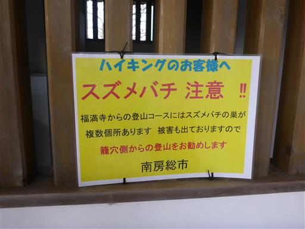
しばし車道を歩くと登山道に到着する。
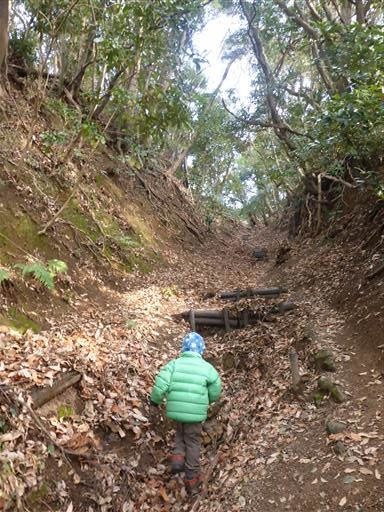
歩き始めてすぐに一合目の標識が現れる。こんな低山でも合目標識がある。
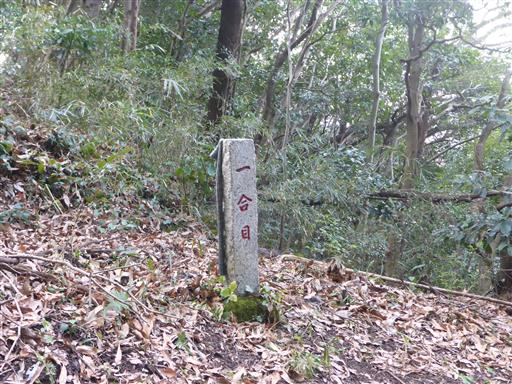
周囲は照葉樹林帯で冬でも濃い緑に覆われている。
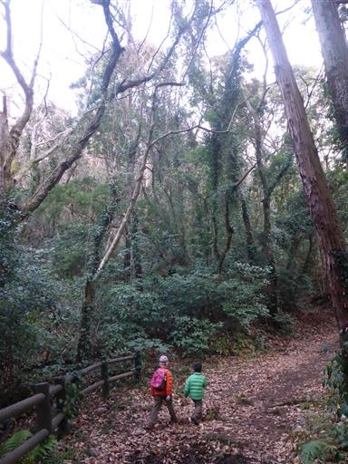
しばらく登ると道は下り坂になる。
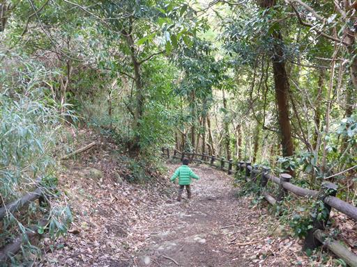
下りきったところが五合目で、ベンチが設置されている。
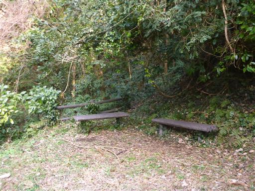
足元にスミレの花を発見。
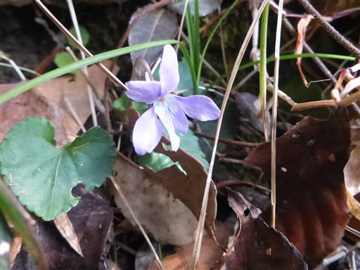
五合目を過ぎると登山道は急登になる。段差の大きい階段がしばらく続く。
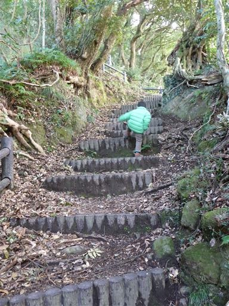
この辺りは大木が多く、美しい樹林帯が広がる。
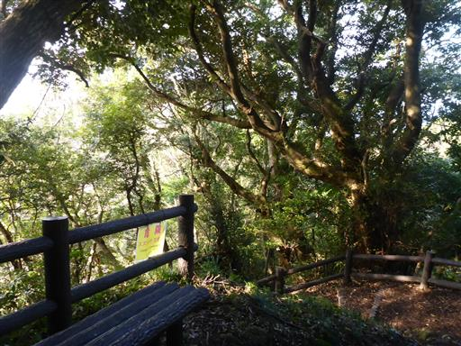
足元に黒い実がたくさん落ちている。何の実だろうか？
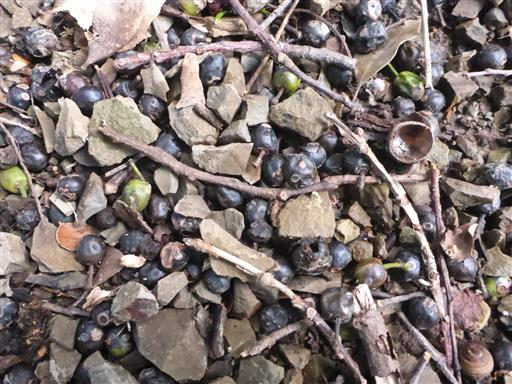
大きな木が倒れている。巨大な木の根っこだ。
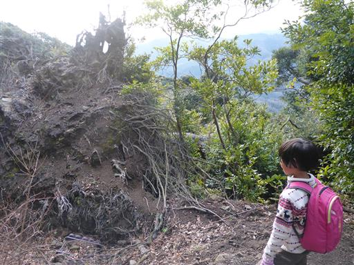
木が倒れたところから展望が広がる。房総の低い山々が見渡せる。
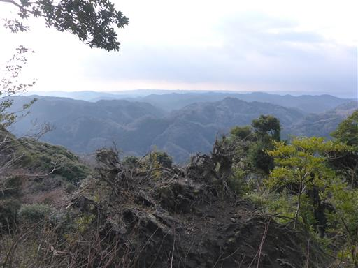
ようやく日差しが出てきた。
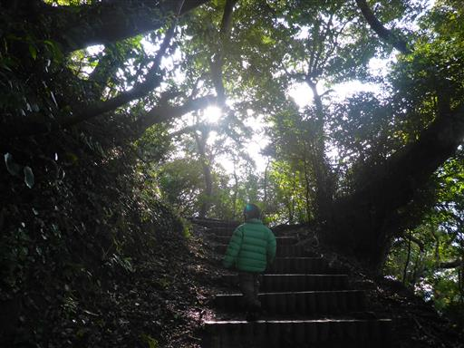
南峰直下に地蔵が祀られている。
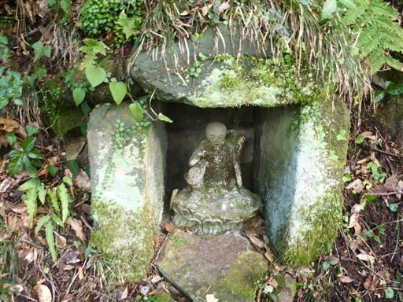
古くて急な階段を登ると南峰山頂。登り降りするのが少々怖い階段だ。
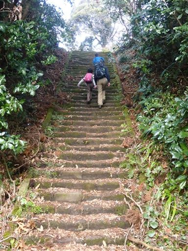
山頂に観音堂が建っている。あまり手入れされていないのか、外壁が損傷している。
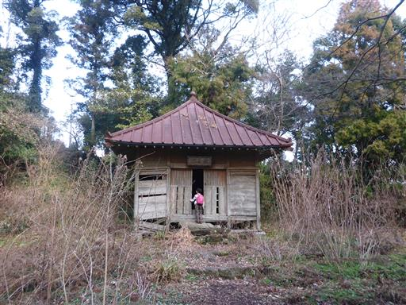
中は比較的きれいに整備されている。
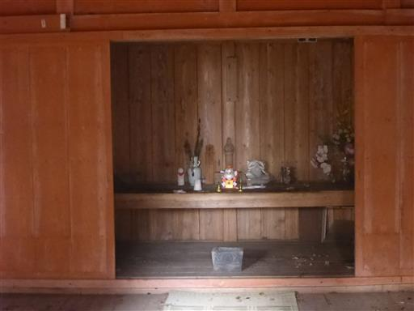
観音堂の脇の階段を登ると南峰山頂に到着する。標高342m。
電波塔と東屋が占拠し、展望は全くない冴えない山頂だ。
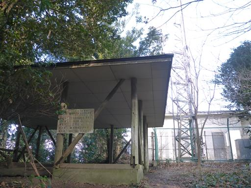
南峰を後にし、北峰に向かう。途中で僅かに残った雪を見かける。
この地にも雪は降ったようだ。
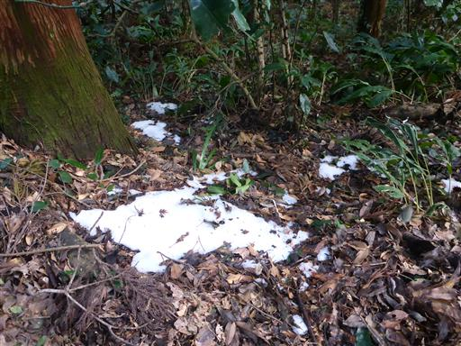
苔むした岩。息子が登って遊んでいる。
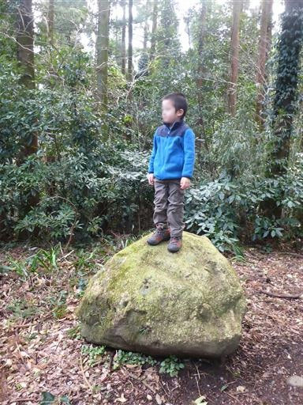
南峰と北峰の鞍部は平らな道で歩きやすい。
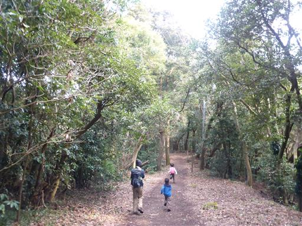
ボタンスギの巨木。標識によると幹周り3.43m、樹齢300年以上とのこと。
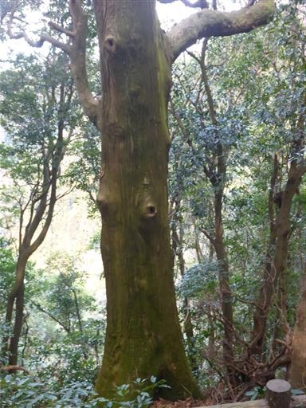
すぐ先に休憩舎があり、岩井の町と東京湾が望める。
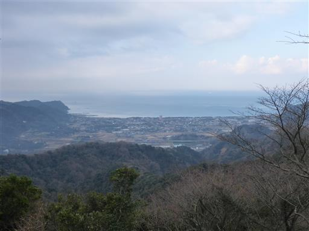
ここから北峰まではすぐ。北峰直下にお堂が建っている。ミカンの供え方が独特だ。
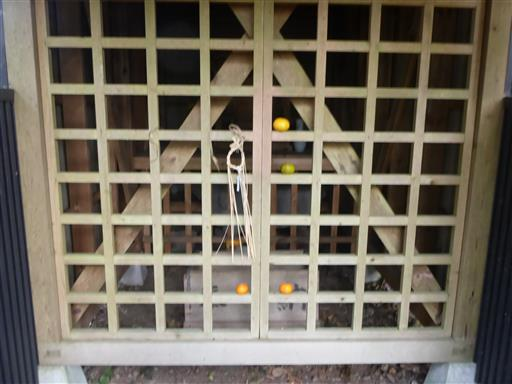
中を覗くと土台に象の形をした石が見える。
謂れが記載されていないので何物かは全くの不明だ。
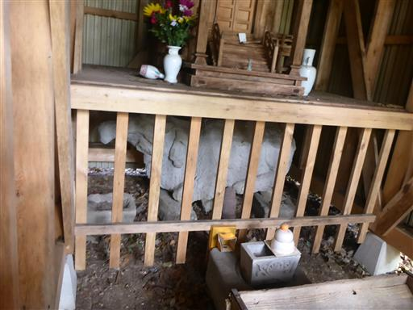
北峰山頂に到着する。
こちらの山頂は広々していて、ベンチとテーブル、展望台がある。
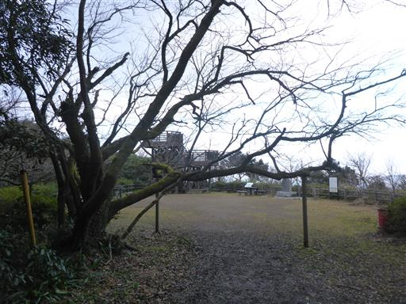
子供たちは早速展望台に登って遊んでいる。
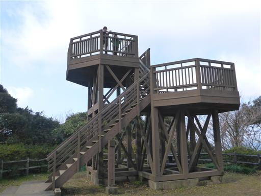
展望台からの景色。先ほど登った南峰がすぐ近くに見える。
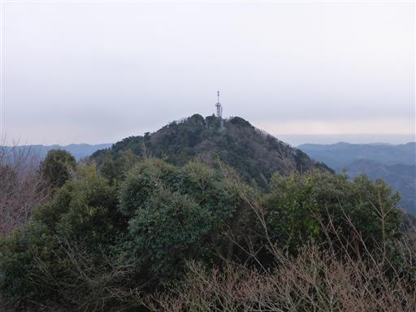
こちらは房総の山々。晴れている場所もあるが、残念ながら暗い雲が多い。
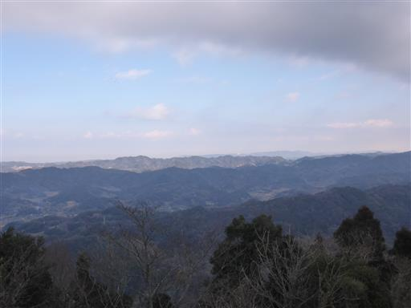
今回も山頂でカップラーメンを食べる。体が温まるので子供たちは喜んでいる。
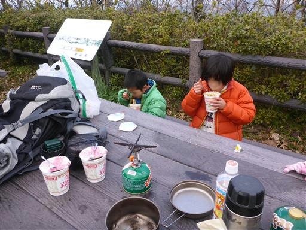
途中で小雨が降ってくる。日差しは出ているのだが…
山で雨にあうのは久し振りだ。
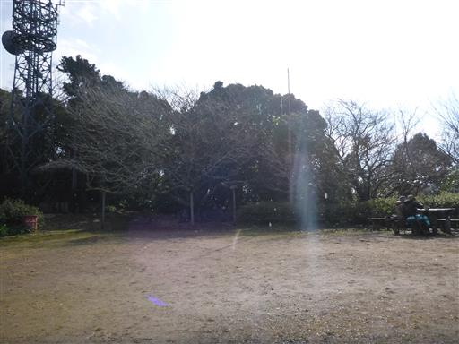
山頂で昼食やおやつを食べ、くつろいでいるとだいぶ空が晴れてきた。
無人で寂しかった山頂も多くの登山者で賑わっている。
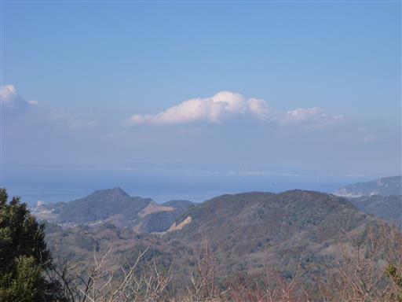
山頂の一角の高台に山頂標識を発見。こんな場所があるとは前回は気付かなかった。
ここが富山の最高地点のようだ。標高は349.5m。
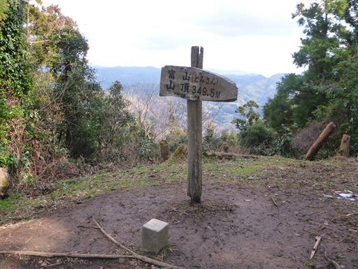
下山は登りとは別のコースを歩く。こちらの道も照葉樹林が美しい。

かなり急な階段が続くが子供たちはすごい速さで駆け下って行き、全く追いつけない。
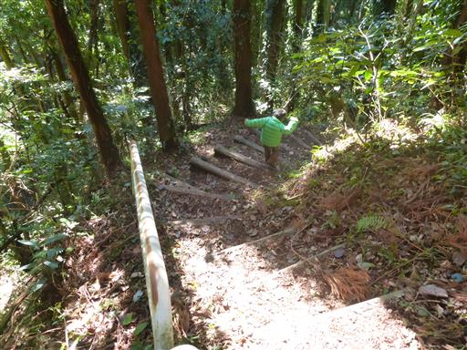
階段を下りきったところで林道に出てくる。
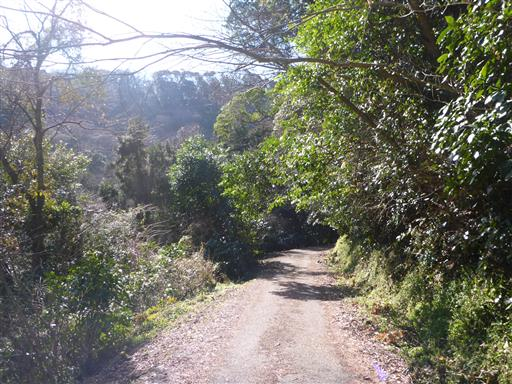
谷を挟んだ対岸の尾根はかなりの急斜面に見える。低山といえど迷い込むと遭難しそうだ。

不思議な形の堰堤を発見。真ん中の構造物は一体何のためにあるのだろう？
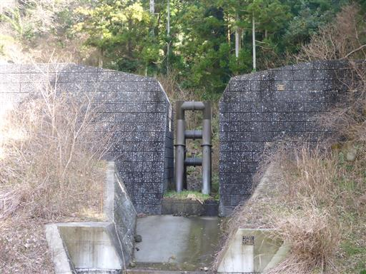
イノシシを捕まえるための罠。道でたむろしていた人に話を聞くと、
イノシシを捕まえると駆除費として町から1万数千円もらえるらしい。
しかしイノシシも利口で、最近は簡単には罠にかからないようだ。
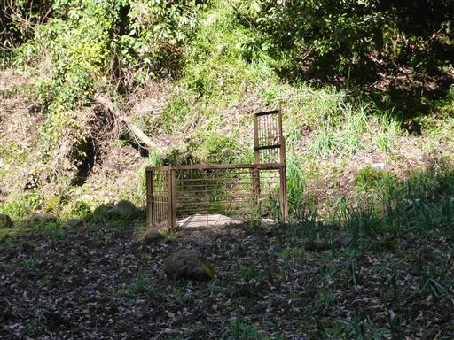
道中にある伏姫籠窟に立ち寄る。
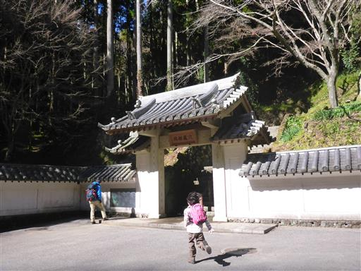
階段を登った先にあるのが伏姫籠窟。
南総里見八犬伝の伏姫と八房が籠った場所とされているが、
その小説を読んでいないため、特に感じるものはない。
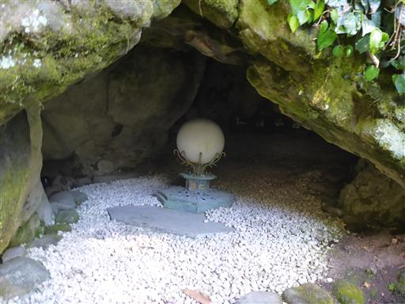
伏姫舞台。仁義礼智忠信考悌の文字が刻まれている。
ベンチがあるため、ここでおやつ休憩をとる。
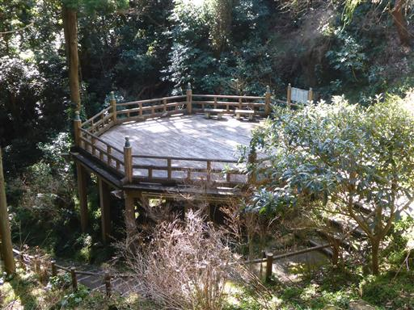
駐車場まで戻ってくる。青空の下の富山は美しい。
今日は天気が今一つだったが、小さな春を見つけられた登山だった。
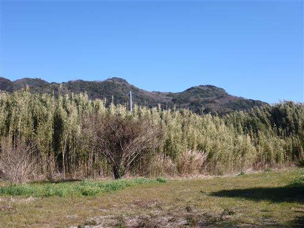